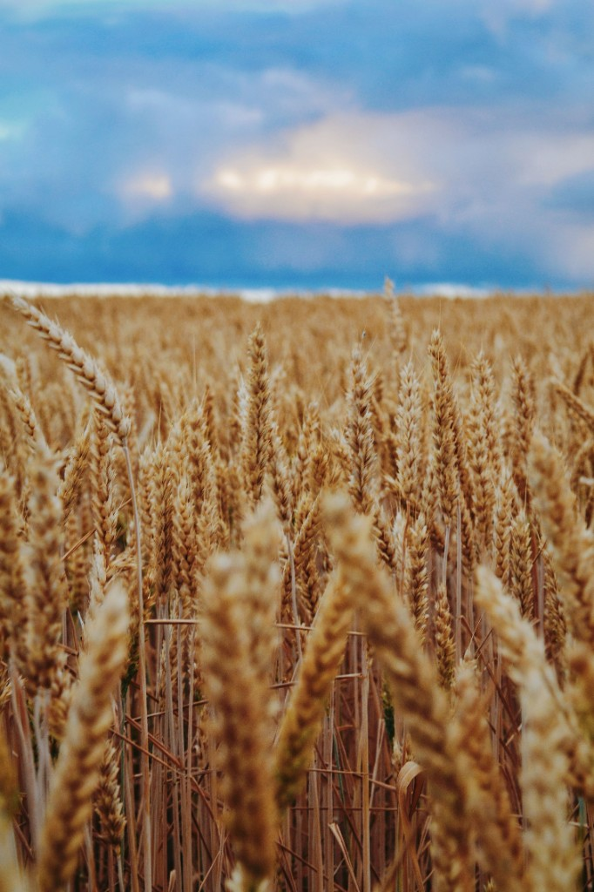
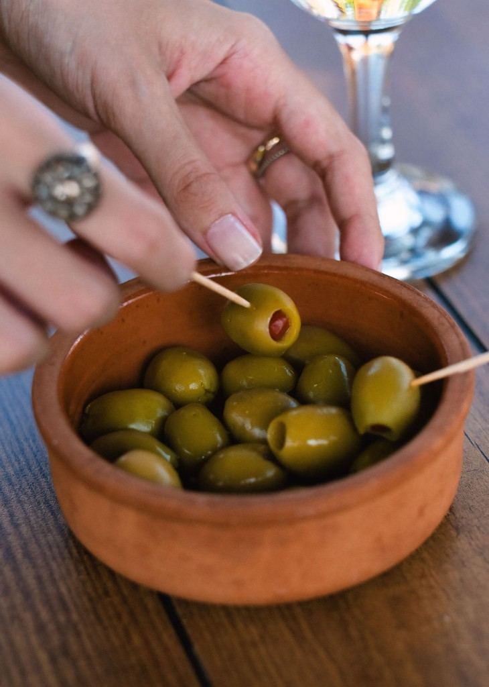
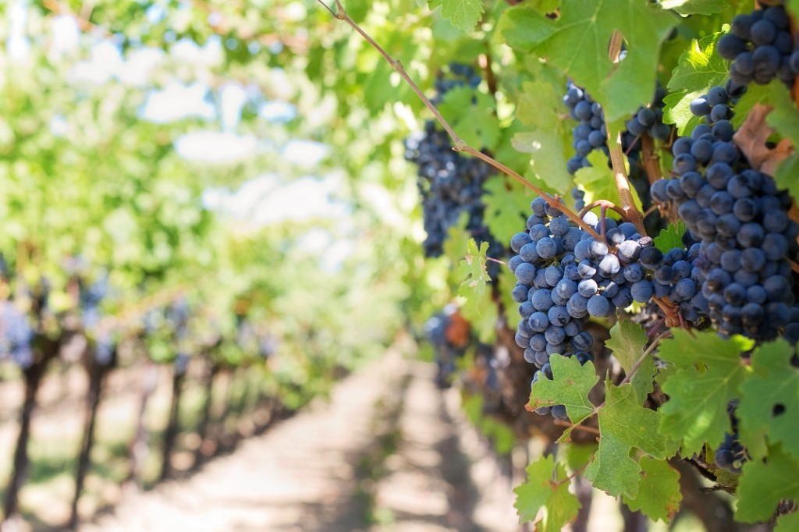
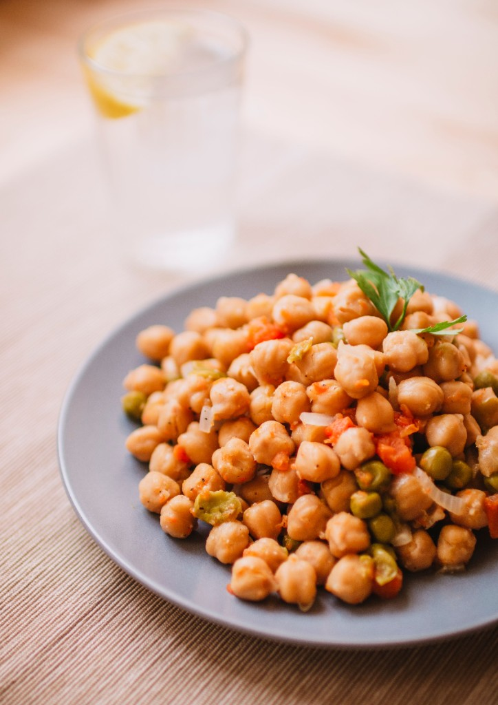

Mediterranean grains, fruits, and legumes that shaped European food culture. Select a crop to open its research dossier.

The foundation of bread and pasta.

Essential for oil and preservation.

Vital for regional beverages and fruit.

Primary protein source in early diets.